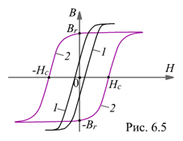

6.1.7.1. Классы ферромагнитных материалов
Важнейшей характеристикой ферромагнитных материалов является зависимость магнитной индукции В от напряжённости магнитного поля Н, т. е. В = f(Н). В зависимости от величины коэрцитивной силы и формы петли гистерезиса ферромагнетики подразделяют на три класса:
- магнитно-мягкие материалы с узкой круто поднимающейся петлёй гистерезиса с Hc<200 А/м (рис. 6.5, кривая 1). Их используют в трансформаторах, асинхронных двигателях и других устройствах переменного тока, т. е. там, где требуется иметь малые потери при перемагничивании – в магнитопроводах с большими переменными индукциями.
К магнитно-мягким материалам относится электротехническая сталь, технически чистое железо, литая сталь и др.;
- магнитно-твердые материалы с коэрцитивной силой Hc>4000 А/м (рис. 6.5, кривая 2). Их применяют для изготовления постоянных магнитов, которые должны иметь большие значения Hc. К ним относятся литые сплавы на основе Fe-Co-Ni-Al типа ЮНДК, бариевые сплавы (марки БИ), металлокерамические сплавы (ММК), сплавы кобальта с самарием, гадолинием и др.;
- специальные магнитные материалы, характеризуемые либо особой формой петли гистерезиса, например, прямоугольной (ферриты марки Вт и др.), либо специфическими свойствами: с сильной зависимостью магнитных свойств от температуры (сплавы никеля с медью марки Н38Х14 и др.); со значительными изменениями геометрических размеров при перемагничивании (магнитострикционные материалы из сплава железа с 14% алюминия и никеля или из сплава железа и кобальта марок НП-2-Т, 50КФ, 14НЮ); железокобальтовые сплавы - пермендюр с максимальной индукцией насыщения до 2,4 Тл; пермаллои (сплавы железа с никелем и добавками других металлов марок 79НМ, 80НХС и др.), имеющие большую магнитную проницаемость в слабых магнитных полях, и др.